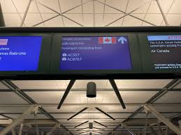

Test!
When I arrived in the United States I had difficulty driving, and to drive a car you had to go through a test,
I did it twice without success.
After 3 weeks I had to do it again, given the difficulties of going to work by bus hat, I did not yet how the route and the functionality of the bus.
this time I'm doing it again for the 3rd time and
I passed my test and I was so happy to go everywhere with my car

My first job in the United States I was surprised that everyone worked standing up for 8 hours.
It was still difficult for me to stay up for 8 hours in my life.
That was the reality that I had to accept and focus on to get the money.
A great experience of practicing the language with friends at work and after I got used to it,
I made an effort to adapt to the rhythm of the country where work takes a lot of time than at home, I had to work a lot of hours to get money.
My experience was also easy at traffic lights and on highways.
Following the standards,Green means you may go through.
Yellow means to slow down in preparation to stop.
Red means you must stop until the light changes.
A flashing yellow light indicates proceeding with caution.
The left lights I can only pass the green light and the right one towards or not if there is no car comming ,